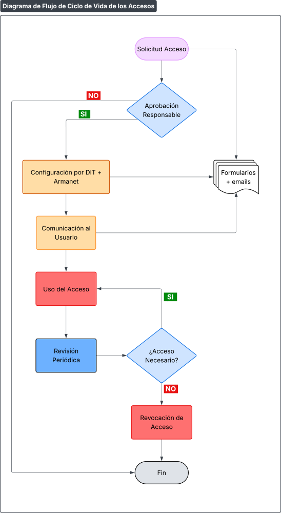

Procedimiento de Configuración de Accesos
Código: P527-IT-2
Última revisión: 10/3/2026
Rev. N°: 1
Cumple: TISAX, ISO 27001:2022
1 OBJETIVO
Establecer el proceso para la gestión y configuración segura de accesos a los sistemas de información de PRODISMO SRL, garantizando el principio de mínimo privilegio y la trazabilidad de los accesos, en cumplimiento de ISO/IEC 27001:2022 y los requisitos de protección de información del marco TISAX.
2 REGLAS BÁSICAS DE CONFIGURACIÓN DE ACCESOS
2.1. Principio de Mínimo Privilegio
- Los usuarios dispondrán únicamente de los accesos necesarios para desempeñar sus funciones de acuerdo a la siguiente planilla
| Nivel | Acceso | Descripción | Ancho de Banda | Ejemplo |
|---|---|---|---|---|
| 0 | Restringido | Sin Acceso, solo actualizaciones de SO y antivirus | - | Usuario Standard (pc de planta mecanizado, planta dispositivos) |
| 1 | Acceso internet Nivel 1 | Restringido YouTube, Skype, videos, redes sociales, Netflix | 10MB | Cad-Cam, puestos que no interactúan con proveedores o clientes |
| 2 | Acceso internet Nivel 2 | Restringido redes sociales, Netflix | 10MB | Supervisores, Compras, Administración, Pañol, Proveedores y Clientes |
| 3 | Acceso internet Nivel 3 | Restringido redes sociales, Netflix | 30MB | Ventas, Project Managers |
| 4 | Acceso internet Nivel 4 | Libre Acceso Total | 30MB | Gerentes - Casos particulares |
- Revisión trimestral de privilegios por parte del RSI
2.2. Segregación de Funciones
| Rol | Accesos Prohibidos |
|---|---|
| Usuario Standard (pc de planta mecanizado, planta dispositivos) | Sin Acceso, solo actualizaciones de SO y antivirus |
| Cad-Cam, puestos que no interactúan con proveedores o clientes | Restringido YouTube, Skype, videos, redes sociales, Netflix |
| Supervisores, Compras, Administración, Pañol, Proveedores y Clientes | Restringido redes sociales, Netflix |
| Ventas, Project Managers | Restringido redes sociales, Netflix |
| Gerentes – Casos particulares | Libre Acceso Total |
2.3. Ciclo de Vida de los Accesos

Diagrama de flujo del Ciclo de Vida de los Accesos
2.4. Controles Técnicos Obligatorios
- Autenticación MFA para todos los accesos remotos y privilegiados
- Contraseñas seguras según política MC413-IT-2 Política de Contraseñas Seguras
- Timeout de sesión: 15 minutos de inactividad para sistemas críticos
- Bloqueo de cuenta: Tras 5 intentos fallidos (15 minutos de bloqueo)
3 CONFIGURACIÓN DE ACCESOS POR TIPO DE SISTEMA
3.1. Sistemas Windows/Active Directory
Ejemplo configuración GPO para accesos:
- Política de Password: 12 caracteres mínimo
- Política de bloqueo de cuenta: Límite 5, Duración 15 min
- Asignación Derechos de Usuario: Acceso remoto restringido
- Política de Auditoría: Log exitosos/falla por eventos de loggeo
3.2. Aplicaciones Internas
- Autenticación por usuario y contraseña
- Control de acceso basado en roles (RBAC)
- Logging de accesos a nivel de aplicación
- Revisión semestral de permisos por dueño de aplicación
4 VPN PARA ACCESO REMOTO (GESTIONADO POR ARMANET)
4.1. Configuración Técnica de la VPN
| Parámetro | Configuración | Responsable |
|---|---|---|
| Protocolo | IPsec IKEv2 | Armanet |
| Cifrado | AES-256-GCM | Armanet |
| Autenticación | Certificados + MFA | Armanet |
| Split Tunneling | Desactivado | Armanet |
| Timeout | 8 horas | Armanet |
4.2. Procedimiento de Solicitud de Acceso VPN a proveedor
- Solicitud formal mediante email corporativo a: abonados@armanet.zendesk.com
- Aprobación del responsable directo y RSI
- Configuración por Armanet (en trascurso del día de la solicitud)
- Entrega de credenciales de forma segura al usuario
- Capacitación del usuario en uso seguro de VPN
4.3. Restricciones de Acceso vía VPN
- Acceso limitado a recursos específicos según perfil
- Revocación inmediata ante comportamientos sospechosos
5 MONITORIZACIÓN (A CARGO DE ARMANET/PRODISMO)
5.1. Monitorización Continua
| Aspecto Monitorizado | Herramientas | Alertas | Respuesta | Responsable |
|---|---|---|---|---|
|
Intentos de acceso fallidos |
SIEM, Active Directory | >5 intentos/5min |
Bloqueo automático |
Armanet |
|
Accesos desde ubicaciones sospechosas |
Azure AD Identity Protection | Países de riesgo |
Revocación temporal |
PRODISMO SRL |
|
Uso de credenciales privilegiadas |
PAM Solution | Uso fuera ventana |
Investigación inmediata |
Armanet |
5.2. SLA con Armanet/PRODISMO
| Servicio | SLA | Tiempo de Respuesta | Responsable |
|---|---|---|---|
| Gestión de incidentes | 99.5% | Respuesta inicial: 15 min | PRODISMO SRL |
| Configuración de accesos | 95% | Tiempo estándar: 2/3h | Armanet |
6 GESTIÓN DE CAMBIOS Y REVOCACIÓN
6.1. Modificación de Accesos
- Solicitud formal mediante mail corporativo a: abonados@armanet.zendesk.com
- Aprobación del responsable de área y RSI
- Implementación en ventana de mantenimiento autorizada
- Verificación post-implementación
6.2. Revocación de Accesos
| Escenario | Plazo de Revocación | Responsable |
|---|---|---|
| Baja laboral | Inmediata (máximo 8 horas) | RRHH + Departamento IT |
| Cambio de puesto | 72 horas | Responsable de área |
| Incumplimiento de políticas | Inmediata | RSI |
| Finalización de proyecto | 15 días | Project Manager |
7 REGISTROS Y AUDITORÍA
7.1. Registros Obligatorios
- Solicitudes de acceso (mails)
- Aprobaciones/denegaciones con justificación
- Configuraciones implementadas (evidencia técnica)
- Revisiones periódicas de accesos
7.2. Retención de Registros
- Logs de acceso: 90 días en caliente, 12 meses en frío
- Solicitudes de acceso: 24 meses después de la revocación
- Configuraciones: 36 meses
8 INCIDENTES Y EXCEPCIONES
8.1. Gestión de Incidentes de Acceso
- Reporte inmediato a proveedor Armanet mediante mail corportivo
- Contención mediante revocación temporal de accesos
- Investigación forense de logs y actividades
- Comunicación a partes interesadas
8.2. Solicitudes de Excepción
- Justificación técnica/operativa detallada
- Evaluación de riesgo por el RSI
- Medidas compensatorias definidas
9 REVISIÓN Y AUDITORÍA DEL PROCEDIMIENTO
9.1. Revisiones Periódicas
- Revisión trimestral: Efectividad de controles
- Revisión anual: Actualización completa del procedimiento
- Revisión post-incidente: Ajustes basados en lecciones aprendidas
9.2. Indicadores de Desempeño
- Tiempo promedio de aprobación de accesos: Objetivo menor a 24h
- Tasa de accesos no autorizados detectados: Objetivo menor al 1%
- Cumplimiento de revisiones periódicas: Objetivo mayor al 95%
- Satisfacción de usuarios: Encuesta anual
10 FORMULARIOS ASOCIADOS
11 REVISIONES DEL DOCUMENTO
| Rev. N° | Fecha | Descripción |
|---|---|---|
| 0 | 25/8/2025 | Primera Emisión del documento |
| 1 | 10/3/2026 | Revisión completa del documento |